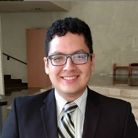

David Rojas Ortiz
dav.reds@gmail.com
phone number:
+52 (81) 2040-2990
Linked-in:
/DavRojas
Github:
/davreds
Programming Languages
C/C++
SQL
Java
Python
Applications
Tableau
Alteryx
GIT
Office Suite
Languages
Spanish
English
French
Education
Instituto Tecnologico y de Estudios Superiores de Monterrey - Monterrey
Bachelor of Science in Computer Science and Technology Engineering (ITC)
Graduation date: May 2020
Cumulative GPA: 92/100
Centro de Investigacion y Desarrollo en Educacion Bilingue - Monterrey
Technical Degree in Bilingual Education
Graduated in June 2012
Cumulative GPA: 93/100
IB Diploma: 33/45
Work Experience
GE Global Operations Center (Jun - Jul 2018)
Software Engineer Intern in the Automation & Analytics team.
Automated 2 of the company's processes, mainly oversaw the data cleaning and transformation.
Used Alteryx for data preparation and Tableau for visualization.
Major School Projects
Semester i: Optimizing the organization's resources using Big Data, Data Analytics and Data Science (Aug 2018 - present) - In association with CEMEX
Semester dedicated to learning and applying Data Analytics on a real-life project.
Developed dashboards for one of CEMEX's business processes and analyzing KPIs.
Responsibilities: Data preparation and integration in SQL Server and dashboards and analysis in Tableau.
Magic Madness Game (May 2017)
Unity based game for the Videogame Project course.
Responsibilities: models, story and part of the game's programming.
Developed in Unity and C#.
Payroll System Demo (Nov 2016)
Demo for ONG ProSalud to keep track of payrolls. Great focus on the SW development process.
Responsibilities: system's UI and main functionalities from requirements to the prototype.
Nuevo Leon Tourism App Demo (Aug 2016)
Project developed at HackMty Fall 2016 for Nuevo Leon's Office of Tourism.
Responsibilities: project leader and UI design.
The team achieved 2nd place in the challenge.
XIII Contest of Management Cases of Tecnologico de Monterrey (Mar 2016)
Management contest focused on analyzing and proposing a business model. (May 2016)
Studied a real-life case of a company and made a business proposal to solve the problem.
Our team won 1st place between all students taking the course during the semester.
Counting Pebbles (Mar 2016)
Tally counter app developed on Pebble at HackMty Spring 2016.
Responsibilities: programming and UI design using Pebble's web-based IDE in C.
Repository: https://github.com/dro17/HackMty-2016
Awards and Leadership
Current president and cofounder of Mozilla Campus Club Mty, fall 2017
National 3rd place and local 1st place at GE's 2018 Summer Experience
Participated in the organization of The Fitness Project 2018, as coordinator and fitness instructor
Participated in Accenture's Think Hack on fall 2017
Participated in Microsoft's College Coding Competition on fall 2017 and fall 2016.
Participated in HackMty on fall 2017, fall 2016, and spring 2016